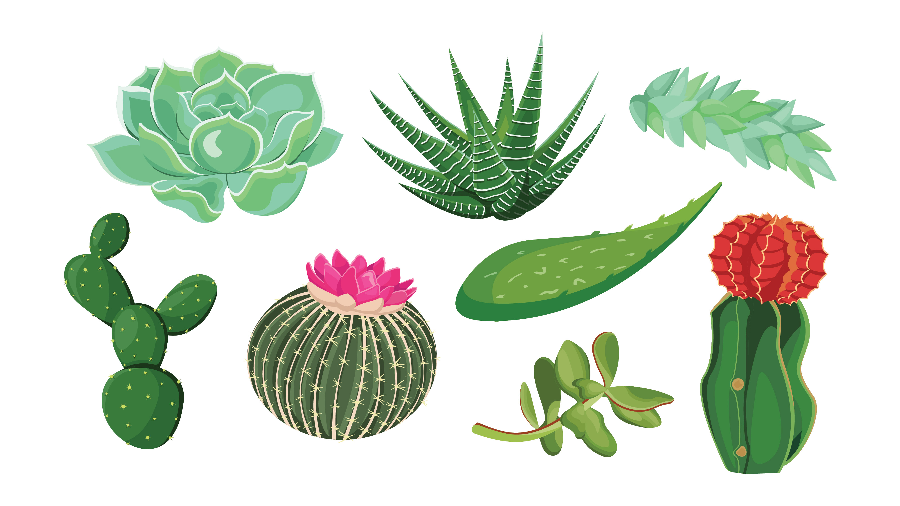

Acknowledgement
Having an idea and turning it into a book is as hard as it sounds. The experience is both internally challenging and rewarding. I especially want to thank the individuals that helped make this happen.
First, I would like to express my special appreciation and thanks to my Experimental Art and Design course lecturer, Sir Arya Harditya. Thank you for allowing me to do this research. Your insightful feedback encourages me to sharpen my thinking and take my work to a higher level. Your advice on both research as well as on my career has been invaluable. I would like to thank my parents for their support and guidance throughout my studies.
A very special thanks to my friend, Alwi Rizqillah, who accompanied me on these sleepless nights lately while working on this book. Also, for helping me to create these amazing illustrations and taking care of my succulents in Malang that have been an inspiration for this book. Other people I have to thank are my classmates in VCD. I could not have completed this book without the support of my friends.
Last but not least, I wanna thank me. I wanna thank me for believing in me. I wanna thank me for doing all this hard work. I wanna thank me for having no days off. I wanna thank me for, for never quitting. :D